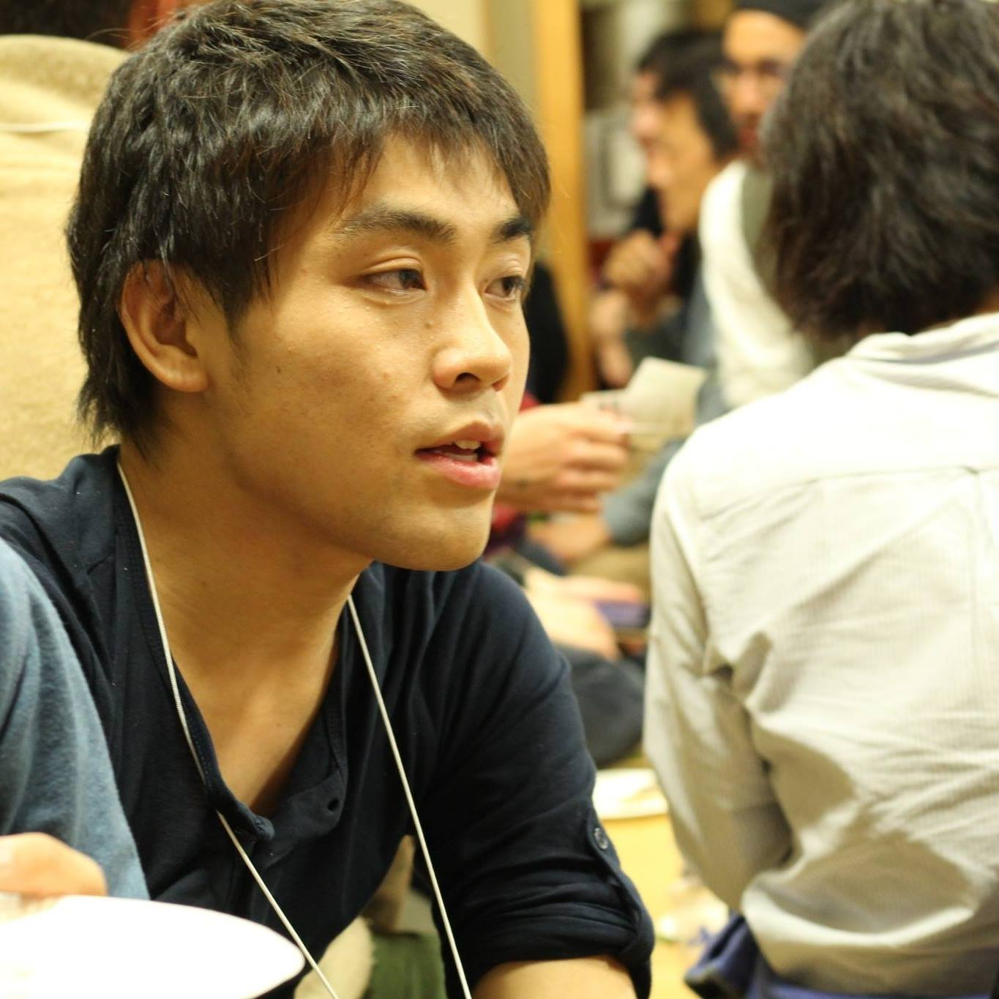

about
Naoki Ohashi
高校卒業後、米国の大学に入学。帰国後、Web系企業で実務経験を積む。
2016年に古座川町に移住。その後、「しくみづくり」として独立。
仕事内容は、web制作、海外向け観光支援（英語サイト、通訳システム等）。
Skills
- HTML/CSS/Javascript/
- Web and DTP Design
portfolio
*お問い合わせ頂きましたら、個別に実績をいくつか紹介させて頂きます。